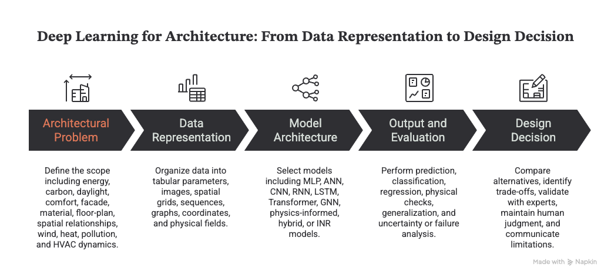

Modules 2–3 — Machine Learning and Deep Learning for
Architecture
Modules
2–3 — Machine Learning and Deep Learning for Architecture
Purpose: detailed teaching content, demonstrations, and English
diagram prompts for short instructional videos
Audience: architecture and built-environment students with basic
data-literacy knowledge
Central question: How can architectural data be transformed into
evaluated machine-learning models and, when appropriate, more
specialized deep-learning systems that support responsible design
decisions?
Combined learning outcomes
By the end of Modules 2–3, students should be able to:
Distinguish supervised, unsupervised, semi-supervised, and
reinforcement learning.
Translate an architectural question into features, targets, data
representations, and a suitable learning task.
Explain the complete machine-learning workflow from preprocessing
through deployment and monitoring.
Build and evaluate regression and classification models using
task-appropriate metrics.
Explain feature selection, multicollinearity, generalization,
underfitting, overfitting, and cross-validation.
Explain the structure and training process of an artificial neural
network.
Match MLPs, CNNs, sequence models, Transformers, GNNs,
physics-informed models, and INRs to suitable architectural data.
Begin with the architectural question and the data. Select the
simplest model that can answer the question reliably, evaluate it on
unseen data, and keep domain knowledge and human judgment in the
decision loop.
Module 2 — Machine
Learning Fundamentals
Episode 2.1 — ML Types and the Complete
Workflow
Episode 2.2 — Why Statistics and Probability
Matter
Module question: How can different deep-learning architectures
process tabular data, images, graphs, sequences, coordinates, and
physical systems?

Module 3 overview: a five-stage workflow
from an architectural problem and data representation to model
architecture, evaluation, and a design decision.
Figure 1. Deep Learning for Architecture — from data
representation to design decision. Created for this module.
Episode
3.1 — From an artificial neuron to a deep network
Central question
How can a network of simple mathematical units learn a complex
relationship between building geometry, climate, and performance?
Artificial neuron
An artificial neuron is a mathematical function, not a realistic
simulation of a biological neuron.
An artificial neuron contains:
Inputs: building area, height, window-to-wall ratio, orientation,
materials, weather, or other features.
Weights: values learned during training that represent the relative
influence of each input.
Bias: a learned value that shifts the neuron’s response.
Weighted sum: the combination of inputs and weights.
Activation function: a transformation that introduces a nonlinear
response.
Output: a value passed to the next layer or used as the final
prediction.
Basic relationship:
Inputs x1, x2, …, xn → z = sum(wi × xi) + b → a = activation(z) →
output
Network layers
Input layer: receives building parameters, climate, images, graphs,
sensors, or simulation data.
Hidden layers: learn intermediate representations and complex
interactions.
Output layer: produces a prediction, class, segmentation, generated
representation, or physical field.
Shallow versus deep networks
A shallow network usually has one or two hidden layers and is
suitable for relatively simple, structured problems.
A deep network has multiple hidden layers and can learn increasingly
abstract representations.
A deeper network is not automatically a better network.
Greater capacity increases requirements for data, computation,
tuning, and validation.
Common activation functions
ReLU: commonly used in hidden layers; passes positive values and
suppresses negative values.
Sigmoid: maps output between 0 and 1; useful for binary
probabilities.
Softmax: converts several class scores into multiclass
probabilities.
Linear output: useful for continuous regression targets.
Tanh: maps output between -1 and 1; historically common in sequence
models.
Architectural example
Building area + height + window-to-wall ratio + orientation + weather
→ MLP hidden layers → predicted annual energy use
Interactive
mini code lab — run an artificial neuron
Change the input values, weights, or bias below. Select Run
code to calculate the weighted sum and the ReLU output directly
in the browser.
Episode 3.2 — How neural
networks learn
Central question
When a neural network makes a wrong prediction, how does it determine
which weights to change?
Complete training loop
Split data into training, validation, and test sets.
Forward pass: inputs move through the network and produce a
prediction.
Compute loss: compare the prediction with the known target.
Backpropagation: calculate how each weight contributed to the
error.
Optimization: update weights to reduce the loss.
Validation: measure performance on data not used for weight
updates.
Repeat across batches and epochs.
Evaluate once on the untouched test set.
Key terms
Parameter: a weight or bias learned from data.
Hyperparameter: a setting selected or searched by the researcher,
such as layer count, neuron count, learning rate, batch size, optimizer,
dropout rate, or epoch count.
Batch: a subset of training examples used for one update.
Epoch: one complete pass through the training dataset.
Learning rate: the size of each weight update.
Loss function: the training objective that the model minimizes.
Optimizer: the update strategy, such as gradient descent, SGD, or
Adam.
Loss examples
Regression: mean squared error or mean absolute error.
Classification: binary or categorical cross-entropy.
Physics-informed learning: data loss + equation or physics loss +
boundary or initial-condition loss.
Architectural interpretation
A model does not understand energy automatically. It learns the
relationship encouraged by the data, representation, loss function, and
constraints selected by the researcher.
Episode
3.3 — Generalization, overfitting, and reliable evaluation
Central question
Why can a model perform extremely well on training data but fail on a
new building or climate?
Three model states
Underfitting: the model is too simple or insufficiently trained;
training and validation errors are both high.
Good generalization: training and validation performance are both
acceptable and remain close.
Overfitting: training performance continues to improve while
validation performance stops improving or becomes worse.
Regularization strategies
Dropout: randomly disables some neurons during training.
Weight decay: discourages unnecessarily large weights.
Batch normalization: stabilizes activation distributions and
training.
Early stopping: stops training when validation performance no longer
improves and retains the best weights.
Data augmentation: creates meaningful variations without changing
the target meaning.
Cross-validation: repeats training and validation across different
data folds.
Simpler architecture: reduces unnecessary depth and parameter
count.
Evaluation must match the
task
Regression: MAE, RMSE, R², residual patterns, and errors across
building types or climates.
Classification: confusion matrix, accuracy, precision, recall, F1,
and the consequences of false positives and false negatives.
Image segmentation: intersection over union, Dice score, boundary
quality, and failures under different image conditions.
Physical-field prediction: pointwise error, field-pattern accuracy,
boundary adherence, conservation or physical residual, and
extreme-condition performance.
Design generation: constraint satisfaction, diversity, feasibility,
performance, expert review, and human usefulness.
Architecture-specific
generalization tests
New buildings from the same dataset.
A building type absent from training.
A different city or climate zone.
A different geometric scale or topology.
Extreme weather or operating conditions.
Noisy or incomplete sensor data.
Important warning:
Random train/test splitting can overestimate performance when
neighboring buildings, repeated simulations, time-adjacent samples, or
nearly identical geometries appear in both sets.
Episode
3.4 — CNN and computer vision for architecture
Central question
How does a neural network move from raw pixels to architectural
features and decisions?
CNN workflow
Input an image, map, voxel grid, or simulation raster.
Convolution filters detect local patterns.
Feature maps encode edges, textures, shapes, and higher-level
structures.
Activation functions introduce nonlinearity.
Pooling or downsampling reduces spatial resolution and compresses
information.
Deeper layers combine local features into abstract
representations.
The output head produces a class, bounding box, segmentation mask,
numerical prediction, or generated image.
Architectural applications
Facade material classification.
Window, door, roof, and building-feature detection.
Construction progress, defect, and safety monitoring.
Street-view, aerial-image, and satellite urban analysis.
Accessibility and visual-design evaluation.
Grid-based solar, wind, thermal, and pollution-field surrogate
modeling.
Example workflow
Street-view facade images → image quality control and labels → CNN
feature extractor → material classification → confidence and confusion
matrix → GIS aggregation → human verification
Risks and limitations
Geographic and visual-data bias.
Differences in cameras, lighting, occlusion, seasons, and image
quality.
The model may learn background context instead of the intended
architectural feature.
Visible material does not reveal the complete wall assembly or
performance.
Grid-based CNNs can struggle with irregular geometry and very
high-resolution 3D domains.
Episode 3.5 —
Graphs, GNNs, and spatial relationships
Central question
Images describe appearance, but how can AI represent relationships
among rooms, systems, buildings, or urban networks?
Graph representation
Node: a room, facade, sensor, building, or urban block.
Edge: adjacency, circulation, visibility, airflow, similarity, or
energy exchange.
Node features: area, program, occupancy, temperature, and
material.
Global features: site, climate, project target, and building-level
properties.
GNN message passing
Each node begins with its own features.
The node receives messages from connected neighbors.
Neighbor messages are aggregated.
The node updates its representation.
Multiple layers allow information to travel farther through the
graph.
The model predicts node labels, edge relationships, graph-level
properties, or new structures.
Architectural applications
Room adjacency and circulation reasoning.
Floor-plan analysis or generation.
Building-system and energy-network modeling.
Urban accessibility and mobility relationships.
Mesh-based physical-field approximation.
Knowledge graphs linking buildings, materials, performance, and
regulations.
Hypergraph distinction
A normal graph edge usually connects two nodes.
A hyperedge can connect several nodes simultaneously.
A hyperedge can represent one apartment, shared circulation zone,
functional group, or multi-room relationship.
Critical distinction:
A graph is a data representation. A GNN is a neural model that learns
on graphs. A hypergraph model, adjacency algorithm, or self-organizing
map is not automatically a GNN.
Spatial workflow
Program requirements → room nodes → adjacency and access edges →
graph or hypergraph → optional GNN → geometry-generation rules →
candidate floor plans → daylight, carbon, circulation, and
space-efficiency evaluation → designer selection
Research example
Weber, Mueller, and Reinhart use a hypergraph to encode floor-plan
organization and support automatic geometry generation. Within that
study, improved space efficiency outperformed envelope upgrades for
operational carbon in 72% of surveyed Zurich buildings, 61% in New York,
and 33% in Singapore. A Zurich case study increased daylight access by
up to 24%. These figures must remain connected to the study’s datasets,
assumptions, and evaluation scope.
Episode
3.6 — Physics-informed learning, surrogate models, and INRs
Central question
Can a model provide fast simulation feedback while remaining
physically plausible under unseen conditions?
Modeling spectrum
Physics-based simulation
Uses governing equations, boundary conditions, material properties,
and numerical solvers.
Strength: an explicit physical foundation.
Limitation: high computational cost and difficult modeling or
calibration.
Purely data-driven model
Learns relationships from measured or simulated examples.
Strength: fast inference after training.
Limitation: may violate physics or fail outside the training
range.
Hybrid or gray-box model
Combines a simplified physical model with learned components.
Useful when some mechanisms are known and others are difficult to
model.
Physics-informed machine
learning
An umbrella term for introducing physical knowledge into machine
learning.
Physics may enter as inputs, features, architecture, loss terms,
bounds, monotonic relationships, conservation rules, or model
ensembles.
Physics-informed neural
network — PINN
A specific neural-network method within physics-informed
learning.
Usually adds governing-equation residuals and boundary or initial
conditions to the loss.
Can learn from both observations and physical constraints.
It is not automatically superior; complex boundaries, stiff
equations, scale, and optimization can remain difficult.
Surrogate model
Approximates a slower high-fidelity simulator.
Supports rapid repeated prediction during design exploration,
optimization, or control.
Reliability is limited by the simulation dataset, parameter range,
geometry representation, and validation method.
Implicit neural
representation — INR
Represents geometry or a physical field as a continuous
coordinate-based neural function.
Coordinates plus a learned shape encoding can produce wind velocity,
temperature, pressure, or another field variable.
Useful for complex geometry, continuous physical fields, and
flexible-resolution queries.
An INR is not automatically physics-informed; physical constraints
must be added explicitly when required.
HVAC example
Weather + HVAC control + occupancy + current indoor temperature →
data model plus physical constraints → next-step indoor temperature →
comfort and energy-control decision
Building-aerodynamics
surrogate example
Building geometry → geometry encoder or latent representation →
neural surrogate or neural field → wind or thermal field →
pedestrian-comfort and facade-pressure metrics → rapid design
iteration
Validation requirements
Compare against independent simulation or measurement.
Test different geometries, scales, climates, and boundary
conditions.
Report field error, extreme-value error, physical residual, and
uncertainty.
Mark interpolation and extrapolation regions.
Keep high-fidelity simulation or expert review in the loop for
critical decisions.
Accuracy
boundaries for scripts and diagrams
Do not describe neural networks as systems that literally think like
a human brain.
Do not interpret correlation as causation.
Do not interpret a p-value as the probability that a hypothesis is
true or as evidence of practical importance.
Do not interpret high R² or accuracy as sufficient evidence of
reliability.
Do not present deeper networks as automatically more accurate.
Do not use test data for hyperparameter tuning.
Do not allow records from the same building or simulation family to
leak across training and test sets.
Do not describe a graph, hypergraph, adjacency algorithm, or
self-organizing map as a GNN unless a neural message-passing model is
used.
Do not use physics-informed ML, PINN, hybrid model, surrogate model,
and INR as interchangeable terms.
Do not imply that a fast surrogate always replaces high-fidelity
simulation.
Do not treat a realistic visual output as evidence of
constructability or performance.
Always state the data range, geometry range, climate range, metrics,
uncertainty, and known failure conditions.
Before public production, verify each external figure, numerical
claim, DOI, publication status, and license. Prefer redrawing
explanatory diagrams in the team’s own visual language.